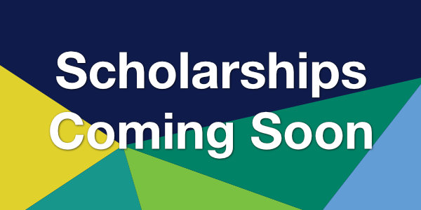

| *|MC:SUBJECT|* | View this email in your browser |
|
|
Celebrating Summer and a New YearHere in Australia we are enjoying summer while celebrating the New Year. The Committee are back from holiday and in full planning mode preparing for Better Together 2022. With call for abstracts, scholarship applications and registrations all opening soon, it is going to be an exciting year ahead.
|
Experience Aboriginal Culture in MelbourneBetter Together 2022 acknowledges Aboriginal and Torres Strait Islander peoples as the Traditional Custodians of the land and sea in which we live and work, we recognise their continuing connection to land, sea and culture and pay our respects to Elders past, present and future.
Aboriginal Heritage WalkExplore and experience Melbourne's Royal Botanic Gardens on this cultural tour with an Aboriginal guide. The Heritage Walk provides a unique insight into the history of both the Gardens (ancestral lands of the Kulin nation) and its Traditional Owners. The tour includes a traditional smoking ceremony, a guided walk through the gardens and discussion about the traditional uses of plants as a source of food, tools and medicine.
Bunjilaka Aboriginal Cultural CentreHoused inside the Melbourne Museum, Bunjilaka presents the Koorie experience in an immersive and moving permanent exhibition. Take a guided tour through the exhibit, or use the interactive features to self-guide. Be sure to visit the Milarri Gardens to discover plants significant to the First Peoples of Victoria.
Charcoal LaneThe gourmet kitchen of Charcoal Lane is also notable for its innovative apprentice and trainee program, providing hospitality training for Aboriginal and disadvantaged young people. The team focus on native ingredients in their creative dishes, including the cocktail list. While the menu is constantly evolving, you can expect to find things like kangaroo, emu and Victorian eel.
|
An Aussie RecipeThere is no cake more Australian than Lamingtons! A moist butter sponge dipped in chocolate then coated with coconut, this is The Cake sold at every suburban bakery and weekend fundraisers. You’ll get coconut everywhere making them and eating them. But that’s all part of the Aussie experience. It’s how we do it Down Under. Find the recipe online and try it! |
Commemorate Waitangi Day
Every year on 6 February, New Zealand marks the signing of the Treaty of Waitangi; Waitangi Day is the occasion for reflecting on the Treaty. Recognition of the significance of the Treaty of Waitangi as the nation's founding document will continue to encourage leaders, communities and individuals to mark the day in new ways, as the Treaty continues to live as part of New Zealand’s past, present and future. |
|  |
|
Better Together 2022 will be offering a variety of virtual and in-person National and International Scholarships. Look out for the next newsletter to find out more. |
Sponsorship InformationBetter Together 2022 will provide the perfect forum for companies actively involved in cerebral palsy and childhood-onset disability to promote their products and services. The Conference will provide multidisciplinary scientific education for health professionals and those with lived experience of disability, as well as promote excellence in research and best practice clinical care for children and adults with cerebral palsy and developmental conditions. There will be many attractive sponsorship and exhibiting opportunities available to increase your company’s awareness to this audience, ranging from small to high level packages. Packages can also be individually tailored to suit your requirements. Why Sponsor or Exhibit?
|
Supported by
|

|
Contact usAusACPDM / IAACD 2022 “Better Together” is proudly managed byICMS Australasia 
This email was sent to *|EMAIL|*. |